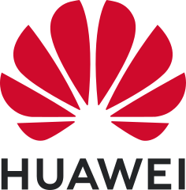
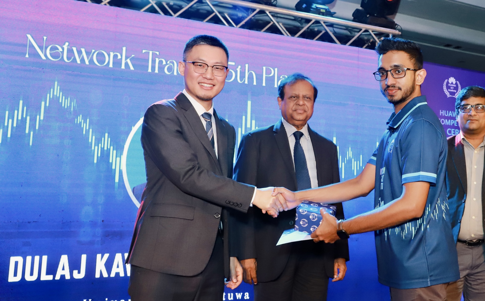
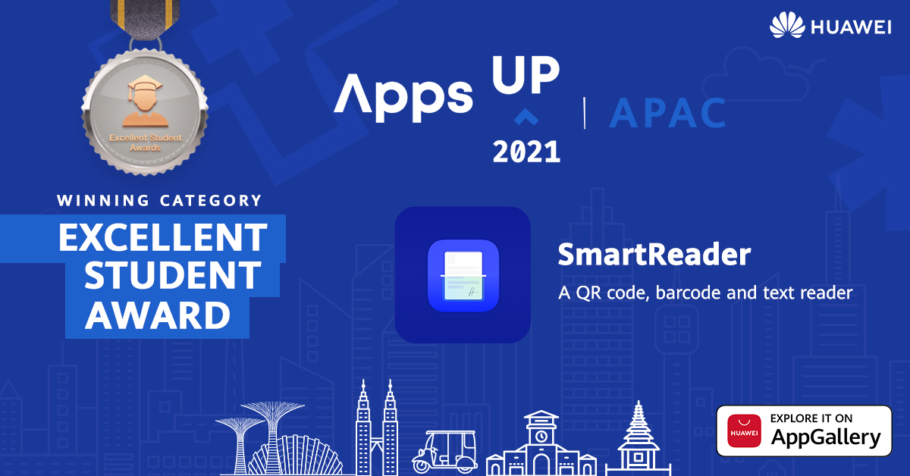
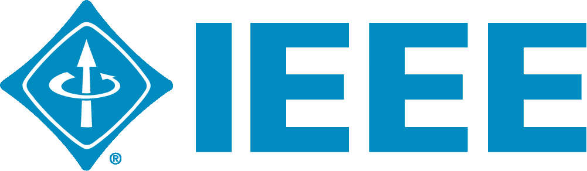
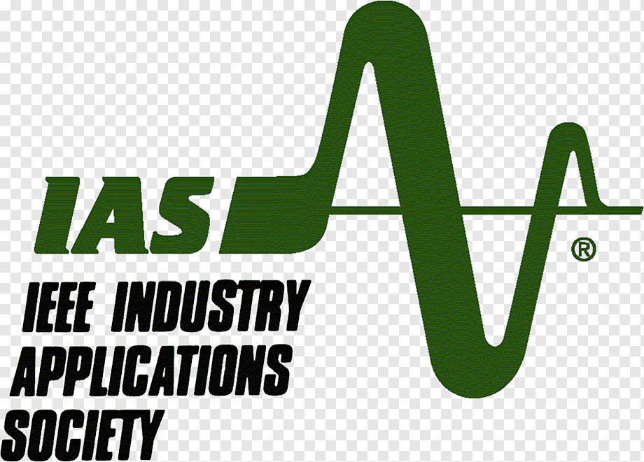
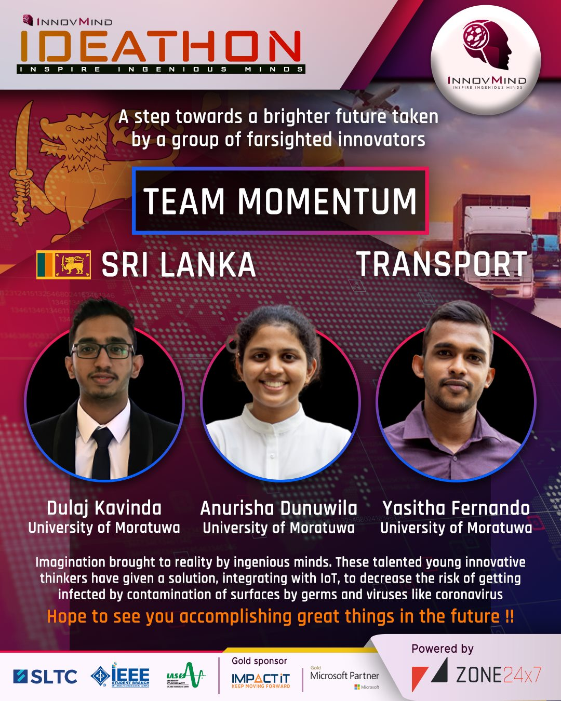
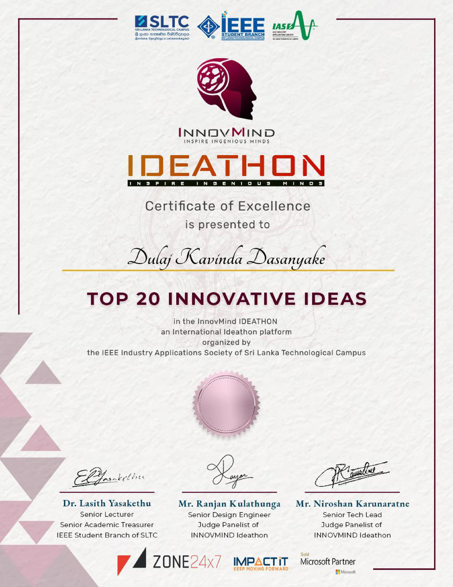
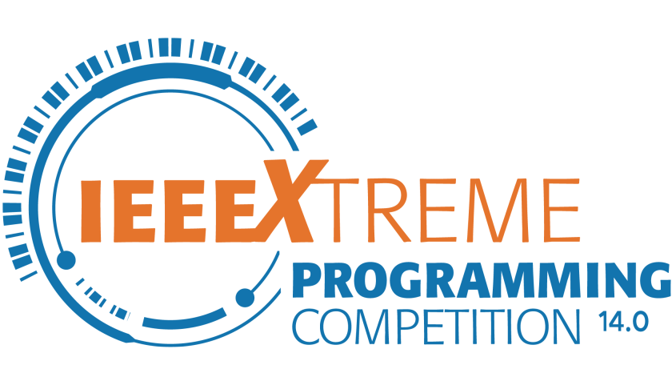
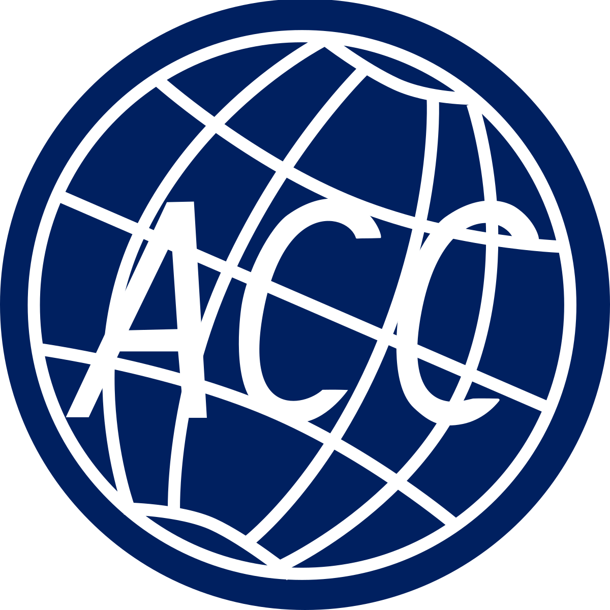

My Achievements
These milestones reflect my drive to learn, lead, and create meaningful impact.
Deppe Fellowship Award – West Virginia University
Benjamin M. Statler College of Engineering and Mineral Resources
Awarded the Deppe Fellowship by the Benjamin M. Statler College of Engineering and Mineral Resources at West Virginia University for the academic year 26-27, as a Ph.D. student in the BMN Lab.
The Deppe endowment provides graduate student research fellowships in the biological, biotechnological and biomedical sciences at the Statler College.
Dean's List
Oct. 2018 – Jul. 2023
Recognized for academic excellence by achieving Dean's List status in 6 out of 8 semesters at the University of Moratuwa, Sri Lanka.

5th Place – All-Island ICT Competition (Network Track)
Dec. 2022
Ranked 5th in Huawei's national-level ICT Competition (Network Track), demonstrating strong understanding and application of core networking technologies.

The Huawei ICT Competition is a global talent development program that challenges university students to solve complex problems in networking, cloud computing, and AI. The Network Track focuses on enterprise-level routing, switching, and network security.
Excellent Student Award in APAC Region – Huawei Global AppsUP 2021
Oct. 2021
"Smart Reader" mobile application using Flutter integrating Huawei kits won the Excellent Student Award from the Asia Pacific region.
Integrating Huawei's scanning and machine learning kits within the Flutter framework was identified as a significant contribution. Used technologies are Flutter, Dart, and HMS Core. The app is launched on Huawei AppGallery.

Huawei's AppsUP is an international app innovation contest aimed at encouraging developers to create impactful applications using Huawei Mobile Services (HMS) Core. It provides a platform for showcasing mobile innovations across multiple regions.


Top 20 – InnovMind IDEATHON
Dec. 2020
Selected for the Top 20 finalists for the project, "IoT Based Touchless Elevator Control" at the InnovMind Ideathon by IEEE IAS, SLTC.
It was implemented as a novel application for the passengers' using elevators, designed to avoid touching the virus-contaminated surfaces on elevator buttons for the issue that arose with the COVID pandemic. A touchless elevator system is designed using a QR code scanner for device identification and MQTT protocol for communication with elevator controllers.


InnovMind Ideathon is a national innovation challenge organized by IEEE SLTC Industrial Applications Society to promote creative engineering ideas. It invites multidisciplinary student teams to present problem-solving concepts with real-world potential.

73rd Place – IEEE Xtreme 14.0
Oct. 2020
Ranked 73rd in Sri Lanka in the globally competitive 24-hour coding contest IEEE Xtreme 14.0, highlighting algorithmic thinking and real-time problem-solving.
IEEE Xtreme is an international, 24-hour programming competition where teams of IEEE student members compete in solving algorithmic challenges under time pressure, testing both collaboration and problem-solving expertise.

1st Runners Up – Tracking Device Design Competition
Sep. 2019
Awarded 1st Runners Up in a joint competition by SEDS Mora and Arthur C. Clarke Institute for designing a precision tracking unit for a water rocket.
The design is a measurement unit for a water rocket to find the distance from its launching position to the falling position and the maximum altitude it travels. GPS technology with NodeMCU is used as a microcontroller to get measurements and a mobile phone was used as the display having communication through Wi-Fi. A barometer was used to find the altitude.
This competition, organized by SEDS Mora in collaboration with the Arthur C. Clarke Institute, challenges students to engineer hardware-based tracking solutions for space-themed applications such as model rockets and scientific payloads.
Mahapola Merit Scholarship
Oct. 2018
Awarded by the University Grants Commission, Sri Lanka, for academic excellence in the G.C.E. Advanced Level; ranked 23rd in the district and 230th island-wide out of over 32,000 candidates.